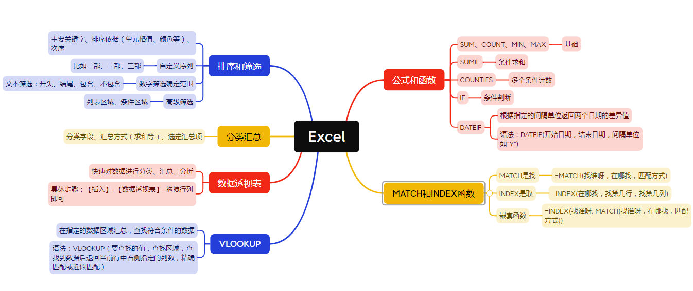

24 Excel和Python的类比学习

以上这张图是Excel中选取和处理数据的基本功能。本章节我们将介绍Excel和Python中Pandas的类比，如果有对Excel比较熟悉的学员，可以通过对Excel的使用理解，去加深对Pandas各项功能的学习和理解，会非常有帮助。我们可以在巩固Excel用法的同时，也学会新的更加强大、更灵活、能处理大批量数据的Pandas。
基本公式和函数
数据转换：
- Excel：Excel提供了各种内置的公式和函数，可以对数据进行转换操作，如文本处理、日期转换、数值计算等。
- Pandas：Pandas提供了一系列的数据转换函数和方法，如字符串处理、日期时间处理、数值计算、缺失值处理等，可以对DataFrame中的数据进行转换和处理。
计算操作：
- Excel：Excel的公式和函数可以进行各种计算操作，如数值计算、统计计算、逻辑计算等。
- Pandas：Pandas提供了丰富的数值计算、统计计算和逻辑计算函数和方法，如求和、均值、最大值、最小值、标准差、排序等，可以对DataFrame中的数据进行计算和分析。
自定义函数：
Excel：Excel允许用户创建自定义的函数，以满足特定的数据处理和计算需求。
Pandas：Pandas提供了灵活的编程接口，允许用户自定义函数，并可以应用于DataFrame中的数据，以实现特定的数据处理和计算逻辑。
排序和筛选
- 排序：
- Excel：可以使用Excel的排序功能对表格中的数据进行升序或降序排序，可以基于单个或多个列进行排序。
- Pandas：Pandas提供了
sort_values()函数，可以对DataFrame对象的一列或多列进行排序，支持升序和降序排序。
- 筛选：
- Excel：Excel提供了筛选功能，可以使用筛选器来过滤表格中的数据，只显示符合特定条件的行。
- Pandas：Pandas提供了多种方式进行筛选，例如使用条件表达式、使用
query()函数、使用loc[]和iloc[]索引器等，可以根据条件筛选DataFrame中的行。
分类和汇总
- 分类（Grouping）：
- Excel：Excel提供了分类功能，可以根据一个或多个列对数据进行分组，并生成每个组的汇总信息，如计数、求和、平均值等。
- Pandas：Pandas提供了
groupby()函数，可以根据一个或多个列对DataFrame对象进行分组，并进行各种聚合操作，如计数、求和、平均值、最大值、最小值等。
- 汇总（Aggregation）：
- Excel：Excel的分类功能可以生成各个组的汇总信息，如计数、求和、平均值、最大值、最小值等。
- Pandas：Pandas的
groupby()函数结合聚合函数（如sum()、mean()、max()、min()等）可以对分组后的数据进行各种汇总操作。
数据透视表
- 创建透视表：
- Excel：Excel提供了直观的用户界面，可以通过拖拽字段到不同的区域（行、列、值）创建透视表。
- Pandas：Pandas提供了
pivot_table()函数，可以基于DataFrame对象创建透视表，需要指定行、列和值字段，并可以选择不同的聚合函数进行汇总。
- 设置行、列和值字段：
- Excel：Excel提供了直观的用户界面，可以将字段拖拽到透视表的不同区域，如行、列和值。
- Pandas：Pandas的
pivot_table()函数中的参数可以指定要用作透视表的行、列和值字段。
- 聚合操作：
- Excel：Excel的数据透视表可以对值字段进行不同的聚合操作，如求和、平均值、计数等。
- Pandas：Pandas的
pivot_table()函数通过指定聚合函数（如sum()、mean()、count()等）对值字段进行聚合操作。
- 过滤和排序：
- Excel：Excel的数据透视表可以通过筛选和排序功能对数据进行过滤和排序。
- Pandas：Pandas的透视表可以使用
pivot_table()函数的参数进行数据过滤和排序。
查找合并数据
- 合并数据：
- Excel：VLOOKUP函数用于在两个表格中查找匹配的值，并将相关数据合并到一个表格中。
- Pandas：Pandas提供了
merge()函数，可以根据一个或多个键（列）将两个DataFrame对象合并成一个新的DataFrame对象。
- 指定合并键：
- Excel：VLOOKUP函数通过指定要匹配的键（列）来进行数据合并。
- Pandas：
merge()函数通过指定要用作合并键的列名来进行数据合并。
- 合并类型：
- Excel：VLOOKUP函数支持不同的合并类型，如精确匹配、近似匹配等。
- Pandas：
merge()函数支持不同的合并类型，如内连接、左连接、右连接和外连接等。
- 多对一合并：
- Excel：VLOOKUP函数可以在一个表格中的多个匹配项中选择一个合适的值进行合并。
- Pandas：
merge()函数可以在一个表格中的多个匹配项中选择一个合适的值进行合并，或者将多个匹配项合并为一个列表。
MATCH和INDEX函数（索引和查找功能）
- 索引功能：
- Excel：INDEX函数用于在一个范围内根据行号和列号返回对应的数值。
- Pandas：Pandas提供了多种索引方式，如使用
loc[]和iloc[]索引器，可以根据行号和列号或条件进行数据的选择和定位。
- 查找功能：
- Excel：MATCH函数用于在一个范围内查找指定的值，并返回其相对位置或位置索引。
- Pandas：Pandas提供了多种方法进行数据的查找，如使用
isin()函数、使用条件表达式、使用query()函数等，可以根据指定的条件查找数据。
*具体内容扩展
扩展1（具体的公式和函数）
在Excel中，有许多内置的函数和公式可用于数据转换。以下是一些常用的函数和公式的示例：
- 文本处理：
- CONCATENATE：将多个文本字符串合并为一个字符串。
- LEFT/RIGHT/MID：从字符串中提取左侧/右侧/中间的字符。
- UPPER/LOWER/PROPER：将文本转换为大写/小写/首字母大写。
- TRIM：去除字符串两端的空格。
- SUBSTITUTE：替换字符串中的特定字符。
- 日期转换：
- DATE/YEAR/MONTH/DAY：根据给定的年、月、日创建日期。
- HOUR/MINUTE/SECOND：从日期时间中提取小时、分钟、秒数。
- DATEVALUE/TIMEVALUE：将文本日期/时间转换为日期/时间值。
- TEXT：将日期/时间格式化为特定的文本格式。
- 数值计算：
- SUM/AVERAGE/MIN/MAX：对一组数值进行求和/平均值/最小值/最大值计算。
- COUNT/COUNTA：计算给定范围内的数值/非空单元格的数量。
- ROUND/ROUNDUP/ROUNDDOWN：对数值进行四舍五入/向上取整/向下取整。
- ABS/POWER/SQRT：计算数值的绝对值/幂次方/平方根。
这只是一小部分Excel中可用的函数和公式示例。Excel提供了丰富的函数库，可以满足各种数据转换和计算需求。
在Pandas中，同样有许多函数和方法可用于数据转换。以下是一些常用的函数和方法的示例：
- 字符串处理：
- str.lower()/str.upper()/str.capitalize()：将字符串转换为小写/大写/首字母大写。
- str.replace()：替换字符串中的特定子串。
- str.split()/str.join()：将字符串拆分为子串列表/将子串列表连接为字符串。
- str.extract()/str.extractall()：从字符串中提取满足特定模式的子串。
- 日期时间处理：
- pd.to_datetime()：将字符串转换为日期时间格式。
- dt.year/dt.month/dt.day：从日期时间中提取年/月/日。
- dt.hour/dt.minute/dt.second：从日期时间中提取小时/分钟/秒数。
- pd.to_timedelta()：将字符串转换为时间间隔。
- 数值计算：
- DataFrame.sum()/DataFrame.mean()/DataFrame.min()/DataFrame.max()：对DataFrame中的列进行求和/平均值/最小值/最大值计算。
- DataFrame.count()/DataFrame.count_nonzero()：计算DataFrame中的非缺失值/非零值的数量。
- DataFrame.round()：对DataFrame中的数值进行四舍五入。
- DataFrame.abs()/DataFrame.pow()/DataFrame.sqrt()：计算DataFrame中数值的绝对值/幂次方/平方根。
Pandas提供了更多的函数和方法，用于数据转换、处理和分析。这些函数和方法可以应用于DataFrame对象的列或整个数据集，使得数据转换更加灵活和方便。
扩展2（Excel的VLOOLUP函数）
在Excel中，VLOOKUP（垂直查找）是一种在一个表格或范围中进行垂直查找并返回相关值的函数。VLOOKUP函数常用于以下情况：
- 查找匹配的值：VLOOKUP函数可以根据给定的搜索值，在指定的表格或范围中查找匹配的值。例如，在一个包含产品名称和对应价格的表格中，可以使用VLOOKUP函数根据产品名称查找对应的价格。
- 提取相关值：VLOOKUP函数可以根据查找到的匹配值，提取相关的值。例如，在一个包含员工姓名和对应工资的表格中，可以使用VLOOKUP函数查找特定员工的工资。
- 建立数据关联：VLOOKUP函数可以建立数据之间的关联关系。例如，在一个包含客户姓名和对应客户ID的表格中，可以使用VLOOKUP函数根据客户姓名查找对应的客户ID，从而在不同数据表之间建立关联。
VLOOKUP函数的基本语法如下：
VLOOKUP(lookup_value, table_array, col_index_num, [range_lookup])- lookup_value：要查找的值或参考单元格。
- table_array：包含要查找的值的表格或范围。
- col_index_num：要返回的值所在列的索引号，索引号从table_array的第一列开始计数。
- range_lookup（可选）：指定是否进行近似匹配。默认为TRUE或省略，表示进行近似匹配；FALSE表示进行精确匹配。
扩展3（Excel的MATCH和INDEX函数）
MATCH和INDEX是Excel中常用的函数，经常与VLOOKUP函数一起使用，用于在表格或范围中进行查找和提取数据。
- MATCH函数： MATCH函数用于在单个列或行中查找给定值，并返回其在列或行中的相对位置（索引号）。 MATCH函数的基本语法如下：
MATCH(lookup_value, lookup_array, [match_type])- lookup_value：要查找的值或参考单元格。
- lookup_array：包含要查找的值的单个列或行。
- match_type（可选）：指定查找的类型。可选值为1（默认值）表示查找小于或等于lookup_value的最大值；-1表示查找大于或等于lookup_value的最小值；0表示精确匹配。
MATCH函数返回查找值在查找数组中的相对位置（索引号）。可以根据需要将MATCH函数应用于单个单元格或一系列单元格。
- INDEX函数： INDEX函数用于根据给定的行号和列号，在给定的表格或范围中提取对应位置的值。 INDEX函数的基本语法如下：
INDEX(array, row_num, [column_num])- array：要从中提取数据的表格或范围。
- row_num：要提取数据的行号。
- column_num（可选）：要提取数据的列号。如果省略，则INDEX函数返回整个行的值。
INDEX函数根据给定的行号和列号，在array中定位对应位置的值，并返回该值。可以根据需要将INDEX函数应用于单个单元格或一系列单元格。
MATCH和INDEX函数通常结合使用，可以实现更灵活和复杂的数据查找和提取操作。MATCH函数用于查找指定值的位置，然后将该位置作为行号或列号传递给INDEX函数，以提取相应的值。这种组合可以在不要求数据排序的情况下，根据某个条件快速查找和提取数据。